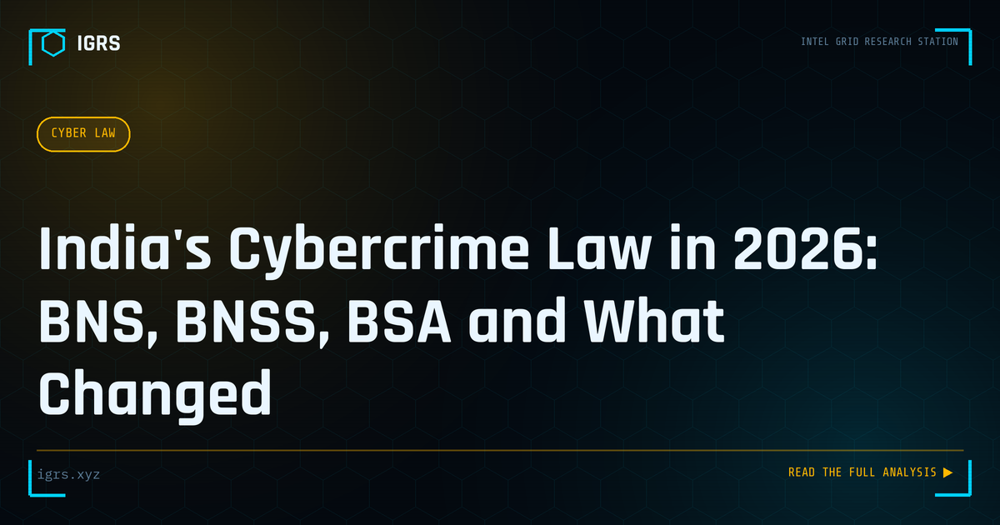

India's Cybercrime Law in 2026: BNS, BNSS, BSA and What Changed
| File No. | IGRS-025/2026 |
| Subject | Updated overview of India's cybercrime legal framework under the new criminal codes |
| Category | Law & Evidence |
| Author | Manuj Kumar Pandey |
| Published | 2026-05-05 |
| Reading time | 12 minutes |
India replaced its colonial-era criminal codes in 2023–24. Here is what changed for cybercrime prosecution, digital evidence, and investigation powers — and what stayed the same.
India's Cyber Law Landscape in 2026
India's legal framework for cybercrime and digital evidence has undergone profound change with the introduction of the new criminal codes and the data protection regime. For investigators, legal professionals, and security teams, staying current with this evolving landscape is essential to lawful, effective practice. This guide summarises the key elements of India's cyber law framework as it stands in 2026.
The New Criminal Codes
The most significant change is the replacement of the colonial-era codes with the Bharatiya Nyaya Sanhita (BNS), Bharatiya Nagarik Suraksha Sanhita (BNSS), and Bharatiya Sakshya Adhiniyam (BSA), all of 2023. These replace the Indian Penal Code, the Code of Criminal Procedure, and the Indian Evidence Act respectively. Investigators must now work with the new section numbers and provisions, making familiarity with the changed framework essential.
Key Provisions for Cyber Investigation
| Provision | Application |
|---|---|
| S.318 BNS | Cheating (formerly IPC 420) |
| S.319 BNS | Cheating by personation |
| S.94 BNSS | Production of documents/data |
| S.63 BSA | Electronic evidence certificate |
| S.66C/66D IT Act | Identity theft, personation |
Electronic Evidence Under the BSA
The Bharatiya Sakshya Adhiniyam continues and modernises the framework for electronic evidence. Section 63 BSA (corresponding to the former Section 65B of the Evidence Act) governs the admissibility of electronic records, requiring a certificate to accompany electronic evidence. Proper compliance with Section 63 BSA remains essential — electronic evidence that lacks the required certification risks being inadmissible, making this provision central to every digital investigation that leads to court.
The IT Act Continues
The Information Technology Act, 2000 remains in force alongside the new codes, governing computer-specific offences. Sections 66 (computer offences), 66C (identity theft), 66D (personation using a computer resource), and 67/67A (obscene and explicit content) continue to apply to cybercrime. Importantly, Section 66A — which criminalised certain online speech — was struck down as unconstitutional in Shreya Singhal v. Union of India (2015) and must never be invoked.
The DPDP Act 2026
The Digital Personal Data Protection Act establishes India's comprehensive data protection regime, creating obligations for organisations handling personal data and rights for individuals. It introduces breach notification requirements, consent and purpose limitation principles, and significant penalties for non-compliance reaching ₹250 crore. For investigators, the DPDP Act both shapes how personal data must be handled during investigations and creates a new category of compliance obligations and potential offences.
Staying Current
India's cyber law framework continues to evolve through amendments, rules, and judicial interpretation. Investigators and legal professionals must stay current — verifying section numbers, following developments in data protection rules, and tracking relevant case law. Using outdated provisions or struck-down sections like 66A undermines cases and credibility. Reliable, up-to-date legal reference is therefore an essential tool for anyone working in cyber investigation in India.
Working Within the Framework
For Indian investigators and security professionals, the 2026 cyber law landscape combines the new criminal codes (BNS, BNSS, BSA), the continuing IT Act, and the DPDP Act data protection regime. Mastery of this framework — using correct, current provisions, complying with Section 63 BSA for electronic evidence, and respecting data protection obligations — is fundamental to lawful and effective practice. As the legal landscape continues to develop, maintaining current knowledge and accurate legal reference ensures that investigations are both effective and defensible, standing up to scrutiny in court and supporting the administration of justice.